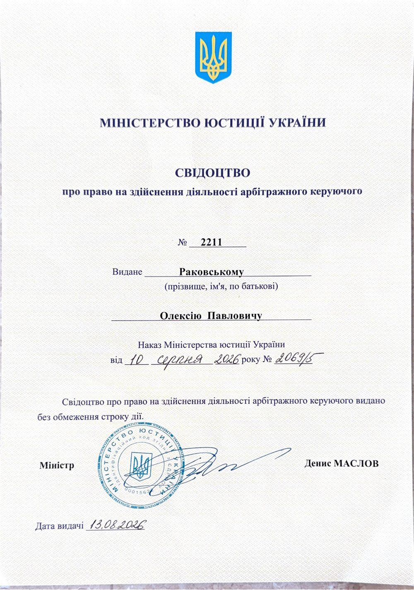

Арбітражний керуючий · Київ
Раковський Олексій Павлович
Арбітражний керуючий. Процедури банкрутства відповідно до Кодексу України з процедур банкрутства.
Свідоцтво про право на здійснення діяльності арбітражного керуючого № 2211 від 13.08.2026
Компетенції
Процедури, у яких працює арбітражний керуючий
Арбітражний керуючий діє в межах процедур, визначених Кодексом України з процедур банкрутства.
Розпорядження майном
Попередня процедура, що застосовується після відкриття провадження у справі про банкрутство. Передбачає перевірку фінансового стану боржника й облік вимог кредиторів.
Санація
Процедура, спрямована на відновлення платоспроможності боржника в порядку й у межах, встановлених Кодексом.
Ліквідаційна процедура
Застосовується, коли боржника визнано банкрутом: включає формування й реалізацію ліквідаційної маси та розрахунки з кредиторами за встановленою черговістю.
Робота з кредиторами
Облік вимог кредиторів, інформування учасників процедури, організаційне забезпечення зборів і комітету кредиторів.
Про мене
Про арбітражного керуючого
Раковський Олексій Павлович. Арбітражний керуючий у Києві. Свідоцтво № 2211.
- Кваліфікація
- Свідоцтво про право на здійснення діяльності арбітражного керуючого № 2211 видане Міністерством юстиції України за наказом від 10.08.2026 № 2069/5, дата видачі 13.08.2026. Свідоцтво видано без обмеження строку дії.
- Освіта
- Донецький університет економіки та права, 2006 рік.
Підхід до роботи

Свідоцтво № 2211 про право на здійснення діяльності арбітражного керуючого, видане Міністерством юстиції України.
Послуги
Процедури банкрутства
Арбітражний керуючий діє в процедурах, передбачених Кодексом України з процедур банкрутства: розпорядження майном, санація, ліквідація, реструктуризація боргів.
Розпорядження майном боржника
Перша стадія провадження у справі про банкрутство юридичної особи. Арбітражний керуючий аналізує фінансовий стан боржника, веде облік вимог кредиторів, забезпечує проведення зборів кредиторів.
Санація
Процедура відновлення платоспроможності боржника за планом, який затверджується в установленому порядку.
Ліквідаційна процедура
Застосовується, коли боржника визнано банкрутом. Включає інвентаризацію майна, формування ліквідаційної маси й розрахунки з кредиторами за черговістю, встановленою законом.
Реструктуризація боргів фізичної особи
Процедура неплатоспроможності громадянина, спрямована на погашення боргів за планом, який затверджує суд.
Банкрутство юридичних і фізичних осіб
Загальна характеристика стадій і порядку провадження залежно від статусу боржника.
Управління та реалізація активів
Виконання функцій, пов'язаних зі збереженням, оцінкою та реалізацією майна боржника в межах процедури.
Фінансовий аналіз
Аналіз фінансово-господарського стану боржника, необхідний для процедур, визначених Кодексом.
Для кого ці процедури
Порядок заявлення вимог, права кредиторів у процедурі, взаємодія з арбітражним керуючим.
Етапи провадження у справі про банкрутство, обов'язки боржника, наслідки відкриття процедури.
Процедури неплатоспроможності фізичної особи, реструктуризація боргів, права й обов'язки боржника.
Судові витрати при поданні заяви
Розміри наведено станом на 1 січня 2026 року.
ПМ — прожитковий мінімум для працездатних осіб: 3 328 грн.
МЗП — мінімальна заробітна плата: 8 647 грн.
Коефіцієнт 0,8 застосовується до ставки судового збору, якщо заяву подано в електронній формі (через Електронний кабінет). Це означає 80% від ставки, тобто зниження на 20%.
Заява кредитора про відкриття провадження у справі про банкрутство
- Судовий збір*10 × ПМ × 0,8 = 10 × 3 328 × 0,8
- 26 624 грн
- Авансування винагороди арбітражному керуючому (на депозитний рахунок суду)3 МЗП × 3 місяці = 3 × 8 647 × 3
- 77 823 грн
- Разом*26 624 + 77 823
- 104 447 грн
Винагорода арбітражного керуючого становить три МЗП за кожен місяць виконання повноважень і авансується за три місяці (ст. 30 і ст. 34 Кодексу України з процедур банкрутства).
Заява боржника про відкриття провадження у справі про неплатоспроможність
- Судовий збір за подання заяви боржником-фізичною особою*не сплачується
- 0 грн
- Авансування винагороди керуючому реструктуризацією (на депозитний рахунок суду)5 ПМ × 3 місяці = 5 × 3 328 × 3
- 49 920 грн
- Разом*0 + 49 920
- 49 920 грн
Винагорода керуючого реструктуризацією становить п'ять ПМ за кожен місяць виконання повноважень і авансується за три місяці (ст. 30 і ст. 116 Кодексу України з процедур банкрутства). Додаткова винагорода визначається статтею 30 Кодексу й у наведену суму не входить.
* Розрахунок наведено для випадку, коли заяву подають через Електронний кабінет. Для юридичних осіб до ставки судового збору застосовано коефіцієнт 0,8.
ПМ і МЗП змінюються, тому перед поданням заяви актуальні розміри слід уточнити. Наведені суми є судовими витратами й авансуванням винагороди, встановленими законом, і не є вартістю послуг арбітражного керуючого.
Як відбувається співпраця
Аналітика
Аналітика з питань банкрутства
Роз'яснення порядку процедур банкрутства, прав кредиторів і наслідків для боржника. Матеріали мають загальний характер.
МатеріалХто такий арбітражний керуючий і яку роль він виконуєЩо означає статус арбітражного керуючого й чим він відрізняється від інших учасників справи про банкрутство.
Арбітражний керуючий — фізична особа, яка має свідоцтво про право на здійснення діяльності арбітражного керуючого й діє в процедурах, передбачених Кодексом України з процедур банкрутства. Залежно від процедури він виконує функції розпорядника майна, керуючого санацією, ліквідатора або керуючого реструктуризацією.
Арбітражного керуючого призначає суд у справі про банкрутство. Його діяльність регулюється Кодексом та іншими актами законодавства, а його завдання полягає у виконанні функцій у відповідній процедурі, а не у представництві інтересів окремої сторони.
Матеріал має загальний інформаційний характер і не є юридичною консультацією.
МатеріалПрава кредитора в процедурі банкрутства: загальний оглядОсновні можливості кредитора після відкриття провадження у справі про банкрутство.
Після відкриття провадження у справі про банкрутство кредитори заявляють свої вимоги до боржника в порядку й строки, визначені Кодексом України з процедур банкрутства. Вимоги, визнані в установленому порядку, вносяться до реєстру вимог кредиторів.
Кредитори беруть участь у зборах кредиторів і можуть бути представлені в комітеті кредиторів. Розрахунки з кредиторами здійснюються за черговістю, встановленою законом. Конкретні строки, форма заяв і умови участі залежать від виду процедури, тому їх слід перевіряти за чинним Кодексом.
Матеріал має загальний інформаційний характер і не є юридичною консультацією.
МатеріалЩо змінюється для боржника після відкриття провадженняЗагальний огляд наслідків відкриття провадження у справі про банкрутство для боржника.
Відкриття провадження у справі про банкрутство змінює режим діяльності боржника. Залежно від стадії процедури обсяг повноважень керівництва боржника може обмежуватися, а окремі дії потребують погодження з арбітражним керуючим. На певних стадіях діє мораторій на задоволення вимог кредиторів.
У ліквідаційній процедурі повноваження щодо управління майном боржника переходять до ліквідатора. Точний обсяг обмежень визначається Кодексом України з процедур банкрутства й залежить від конкретної стадії.
Матеріал має загальний інформаційний характер і не є юридичною консультацією.
Поширені запитання
Хто такий арбітражний керуючий і хто його призначає?
Арбітражний керуючий — особа, яка має свідоцтво про право на здійснення діяльності арбітражного керуючого й діє в процедурах банкрутства. У справі про банкрутство його призначає суд.
Чим арбітражний керуючий відрізняється від адвоката?
Арбітражний керуючий виконує функції в процедурі банкрутства, визначені Кодексом України з процедур банкрутства. Він діє в інтересах процедури, а не представляє окрему сторону, як це робить адвокат.
Як кредитору заявити свої вимоги в процедурі?
Вимоги заявляються в порядку й у строки, встановлені Кодексом України з процедур банкрутства. Конкретні умови залежать від виду процедури, тому перед поданням заяви варто їх уточнити.
Що відбувається з боржником під час процедури?
Режим його діяльності змінюється залежно від стадії процедури. Обсяг обмежень визначає Кодекс.
Скільки триває процедура?
Тривалість залежить від виду процедури й обставин справи. Строки визначені Кодексом України з процедур банкрутства та рішеннями суду.
Як до вас звернутися?
Залиште звернення через форму на сайті, зателефонуйте за номером +380668440888 або напишіть на kyivarbitr@gmail.com.
Новини
Новини
Короткі матеріали про процедури банкрутства, зміни в практиці та корисні сервіси. Інформація має загальний характер.
Завантаження…
Інформер
Корисна інформація
Офіційні курси НБУ, ринок криптовалют, відкриті торги Prozorro.Sale та сервіси судової влади.
Криптовалюти
Bitcoin, Ethereum, XRP
Завантаження…
Джерело: CoinGecko. Довідкова інформація, не є фінансовою порадою.
Prozorro.Sale: майно банкрутів
Нещодавно оновлені відкриті торги
Завантаження…
Джерело: Prozorro.Sale (відкриті дані).
Судова влада: стан розгляду справ
Офіційні сервіси для перевірки справ
- Стан розгляду справСтадія розгляду, склад суду, рішення. Пошук за номером справи або сторонами.
- Єдиний державний реєстр судових рішеньТексти судових рішень.
- Верховний Суд: стан розгляду справКасаційні провадження.
- Електронний кабінет ЄСІТСПодання документів до суду в електронній формі.
- Судова влада УкраїниОфіційний веб-портал.
Реєстр боржників
Офіційні ресурси Міністерства юстиції України
- Єдиний реєстр боржниківВідкрита база відомостей про боржників за виконавчими провадженнями, що оприлюднюється в режимі реального часу.
- Автоматизована система виконавчого провадженняІнформація про виконавчі провадження.
Джерело: Міністерство юстиції України. Внесення до реєстру не замінює судового рішення та не є оцінкою фінансового стану особи.
Інформація в цьому розділі надається сторонніми сервісами, має довідковий характер і не є юридичною чи фінансовою консультацією. Для дій у конкретній справі користуйтесь офіційними джерелами.
Контакти
Контакти арбітражного керуючого
Раковський Олексій Павлович, арбітражний керуючий.
- Адреса
- м. Київ, вул. Дениса Монастирського, буд. 3, оф. 4
- Телефон
- +380668440888
- kyivarbitr@gmail.com
- Години прийому
- 10:00–18:00
Залишити звернення
Опишіть ситуацію коротко. Контакти для відповіді вказуйте ті, якими користуєтесь.
Надсилання форми не створює відносин між адвокатом і клієнтом і не гарантує жодного результату. Не надсилайте через форму конфіденційні документи.